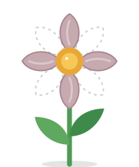
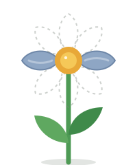
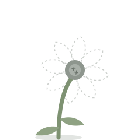

Flower component
Petal color shifts warm → cool as petals are lost. Missing petals leave a dashed ghost so players can see what they have lost.
 8 petalsfull bloom
8 petalsfull bloom 6 petalspeach
6 petalspeach
4 petalsdusty mauve
2 petalscold blue
0 petalswilted, Rose of Jericho offeredMotion demo
- Wrong guess: petal lifts 6pt, then drops ~240pt while spinning and fading, 1.3s, ease-in. Remaining petals recolor over 0.5s.
- Correct guess: nearest petal pulses 1.12x with a brief brightness lift, 0.6s.
- Zero petals: head droops 55 degrees on the stem over 0.8s, center greys.
- Revival: head rises, 4 petals bloom in a staggered 0.12s sequence with overshoot spring, golden glow.